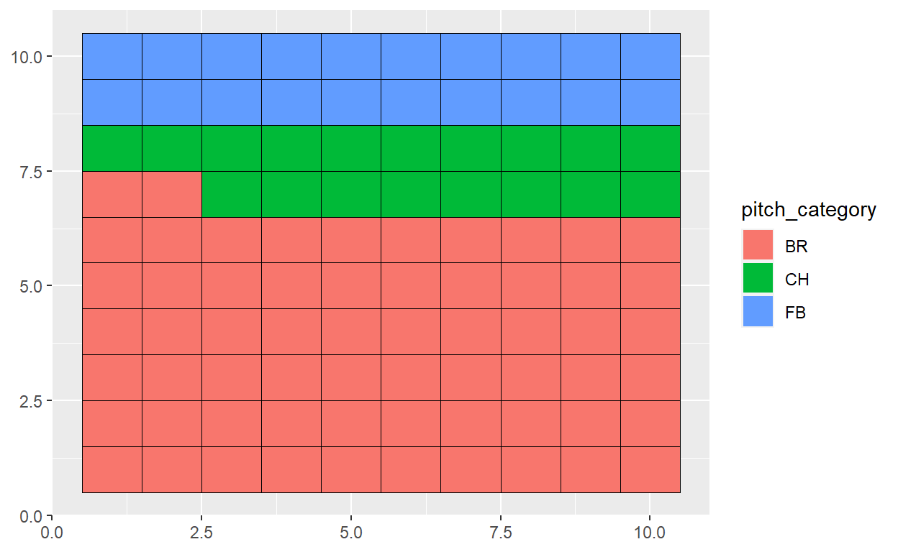
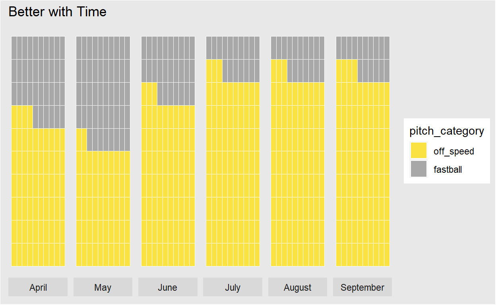
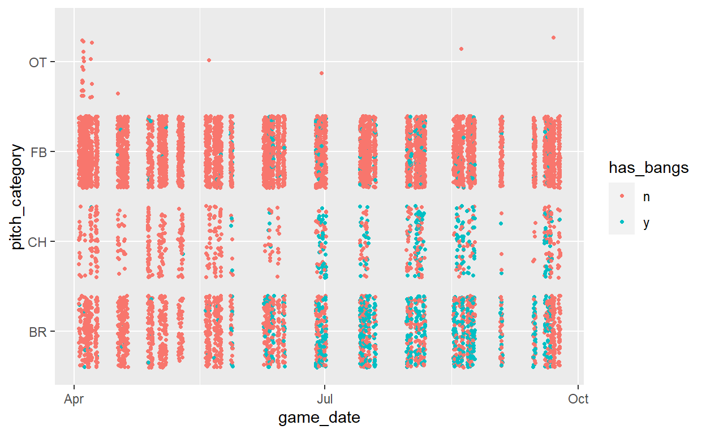
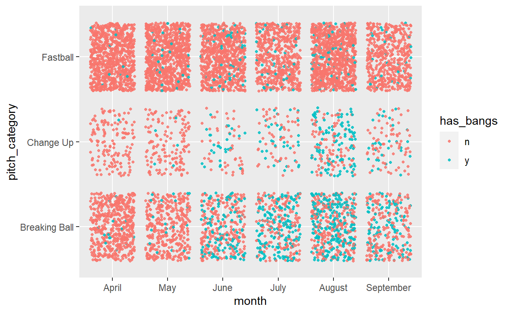
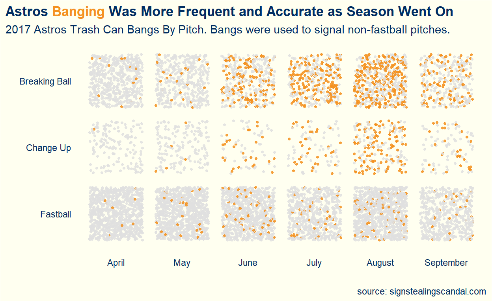

In my most recent course we had to create a unique visualization using a dataset of our choice. This post summarizes the analysis/visualization process I took.
Major League Baseball was marred in controversary this off season. No controversy was more prominent than the sign stealing the 2017 World Series Champion Houston Astros were accused of. During the 2017 season, the Astros were stealing opponents’ signs with the use of cameras in the outfield. The Astros would then bang on a trash can to indicate the type of pitch that was coming.
In a statement from the commissioner of baseball, the Astros used the banging and other tactics to indicate when a non-fastball pitch was coming. Thanks to Tony Adams and the website he created, signstealingscandal.com, data is available for analysis on the banging. Adams watched and listened to every pitch of 59 Astros home games. The data is detailed and includes whether he heard a bang or not for every pitch. It should be noted that Adams was not able to obtain audio and video for 23 of the Astros home games during the 2017 Season.
Use this link to follow along with the code: https://github.com/jpelkofer/astros_code/blob/master/blog_code
The data can lead to many interesting questions: Does the data show the Astros benefited from the banging? Did some players benefit more than others? Did all the players use the banging?
While these are all interesting questions to explore, I became interested in another avenue based on the statement from the commissioner of baseball: How accurately were the Astros identifying non-fastball pitches with the trash can bangs?
My initial instinct for a visualization was a proportional waffle chart. I started by filtering the data for only pitches involving bangs. The waffle chart would then be color coded by pitch type (FB for fastball, CH for change up, BR for breaking ball).

The waffle chart shows the Astros did a good job of identifying non-fastball pitches. Accurately identifying them around 80% of the time when bangs were involved.
Is this 80% consistent over the 2017 season or did they progressively get better? Maybe they only used banging during a certain point in the season?

The Astros were using the banging to some extent throughout the entire 2017 season. Major league baseball seasons typically start in April and end sometime in September. The chart also shows they got better identifying off speed pitches as the season went on. In April, they were correctly identifying around 65% of pitches while in September they improved that number to almost 85%.
This chart has potential to be a bit misleading. By, Making the waffle charts proportional one may infer similar sample sizes month to month.
Changing the approach, I decided to try a different chart type and incorporate all the data I had. My hope was to create something less misleading and tell a better story.

This scatter plot begins to tell a better story. It shows the Astros were using banging throughout the entire season but much more so later in the season. To clean it up a bit I group the pitches by month and replot.

With this approach, I get a good grouping of small multiples that tell a much better story. The data shows the Astros used the trash can banging more frequently and accurately as the season went on.
I’ll end with the final plot and explain below some of the adjustments I made to better tell the story.

Most of the editing to the final chart involved eliminating unnecessary elements and using color to emphasize the story being told. I removed both axis titles from the charts given the labels on both axes are self-explanatory. When thinking about color, I wanted to emphasize the bangs. The bangs were the story. For pitches involving bangs I used the Astros orange team color over a light grey for non-bang pitches. I liked the contrast between the colors and how it helped tell the story.
Lastly, I eliminated the legend entirely. I instead relied on a new trick I recently picked up in this presentation from the rstudio conference by William Chase: https://resources.rstudio.com/rstudio-conf-2020/the-glamour-of-graphics-william-chase. I encoded the pitches that were bangs by using the same orange color in the title. This allowed me to maximize my data-ink ratio made famous by Edward Tufte (something I learned in my current course).
I particularly like this chart because it has potential to create discussion and ask more questions. Did the Astros plan on using the bangs prior to the season? Were they gaining more confidence in their abilities to steal signs as the season went on?